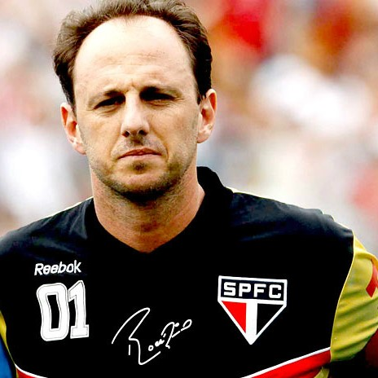

|
Rogério Ceni conquistou diversos títulos ao longo de sua carreira, incluindo três edições do Campeonato Brasileiro, três da Copa Libertadores da América e um Mundial de Clubes da FIFA com o São Paulo. Ele também foi campeão da Copa do Brasil, da Supercopa Libertadores e do Campeonato Paulista, entre outros troféus.
Em 2015, após mais de 20 anos defendendo o São Paulo, Rogério Ceni encerrou sua carreira como jogador e se tornou treinador. Ele teve passagens pelo São Paulo e pelo Fortaleza, onde teve sucesso e conquistou títulos. Sua passagem pelo Flamengo, como treinador, foi muito bem-sucedida, levando o clube a conquistar o Campeonato Brasileiro e a Copa Libertadores em 2020.
Rogério Ceni é amplamente considerado um dos maiores goleiros da história do futebol brasileiro e um ídolo para os torcedores do São Paulo. Sua habilidade em cobranças de falta e pênaltis, combinada com seu desempenho notável como goleiro, o tornaram uma figura única no esporte. Sua carreira é marcada por conquistas, recordes e um legado duradouro no futebol brasileiro.
|

|